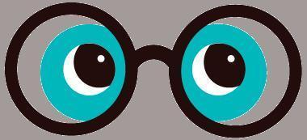
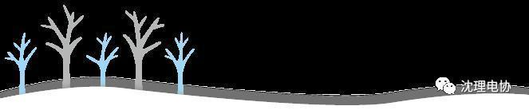

大家平安夜快乐
你不一定要点蓝字关注我的



平安夜是什么时候
平安夜（Silent Night），即圣诞前夕（Christmas Eve，12月24日），在大部份基督教社会是圣诞节庆祝节日之一，但现在，由于中西文化的融合，已成为世界性的一个节日。

平安夜简介
平安夜传统上是摆设圣诞树的日子，但随着圣诞节的庆祝活动提早开始进行，例如美国在感恩节后，不少圣诞树早在圣诞节前数星期已被摆设。延伸发展至今平安夜不仅是指12月24日晚了，指的是圣诞前夕，特指12月24日全天，但由于一般节日氛围在晚上容易调动起来，大型活动都集中在晚上，固被称作平安夜，更加贴切。

平安夜怎么过
在中国，有些人可能不在意这个节日，平时怎么生活还怎么生活；有些人可能会和朋友们出去玩乐；有些人可能会和喜欢的人约会互送礼物。但是说实话大部分人都不知道该怎么过平安夜吧。小编觉得，作为快要期末考试的大学生，我们就听听圣诞节的音乐，自己买个苹果吃，感受一下节日气氛就算了。别想那么多没用的东西了，好好复习，期末考个好成绩比什么都好！

关注就能收到圣诞礼物哦~


编辑 信息部 康宁